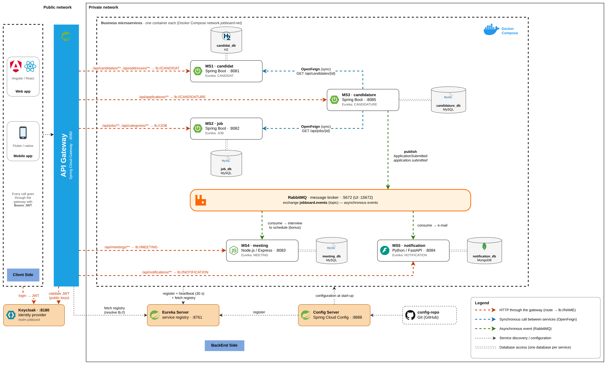
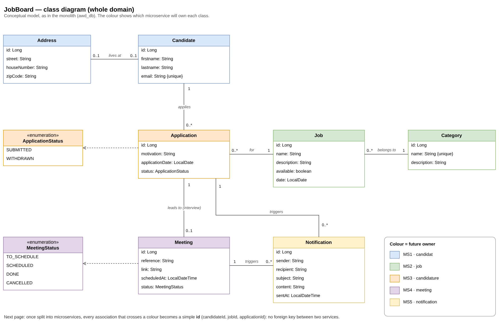
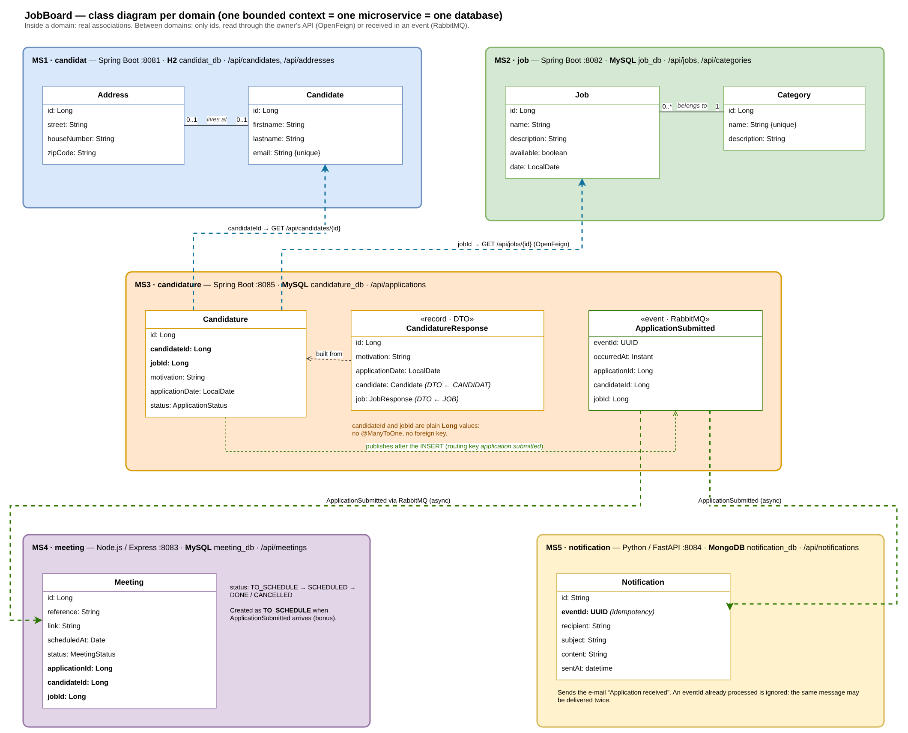
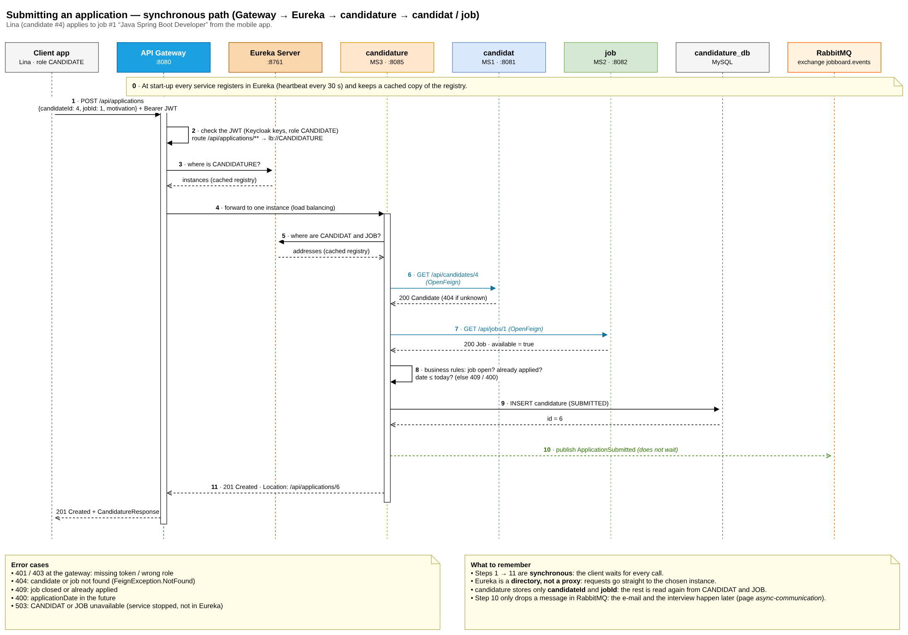
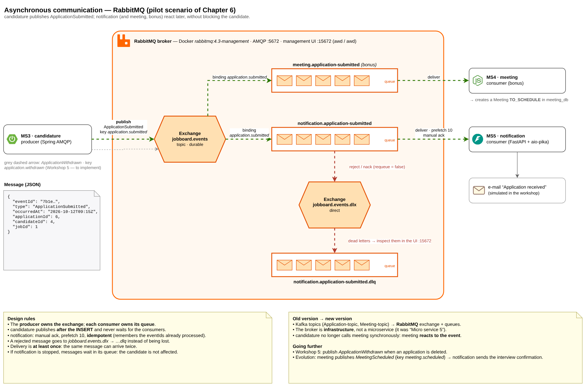
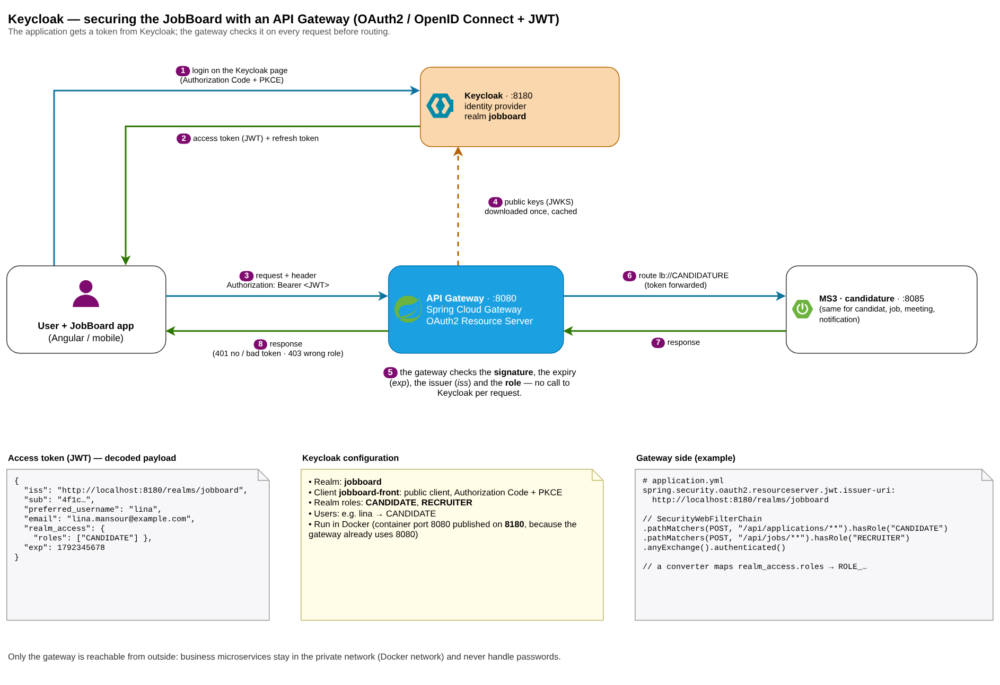

JobBoard application documentation
Entry point to the diagrams that document the JobBoard application, built with a microservices architecture in the Distributed Web Applications module. The pages follow the order of the course: from splitting into microservices to synchronous, then asynchronous communication, and finally security.

1Microservices architecture
The 5 microservices, the gateway, Eureka, Config Server, Keycloak, RabbitMQ and Docker.

2Class diagram
The conceptual model of the whole JobBoard domain, coloured by microservice.

3Class diagram per domain
One bounded context per microservice: internal associations, references by id between domains.

4Synchronous communication (OpenFeign)
“Apply for a job” sequence diagram: gateway, Eureka and two OpenFeign calls.

5Asynchronous communication (RabbitMQ)
ApplicationSubmitted event: exchange, queues, dead-letter queue and consumers.

6How Keycloak works
Login, JWT and checks by the gateway, in 8 numbered steps.
Files
- microservices.drawio: the single source of the six diagrams (open it in diagrams.net or draw.io Desktop).
img/folder: one PNG image per diagram, for your reports and presentations.
The running scenario
POST /api/applications. Pages 4 and 5 follow this same request, first on the synchronous path,
then after the response.